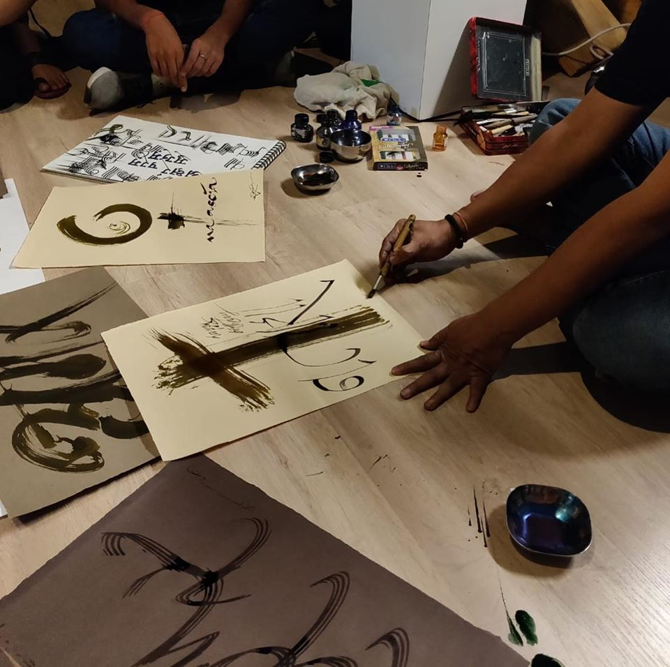
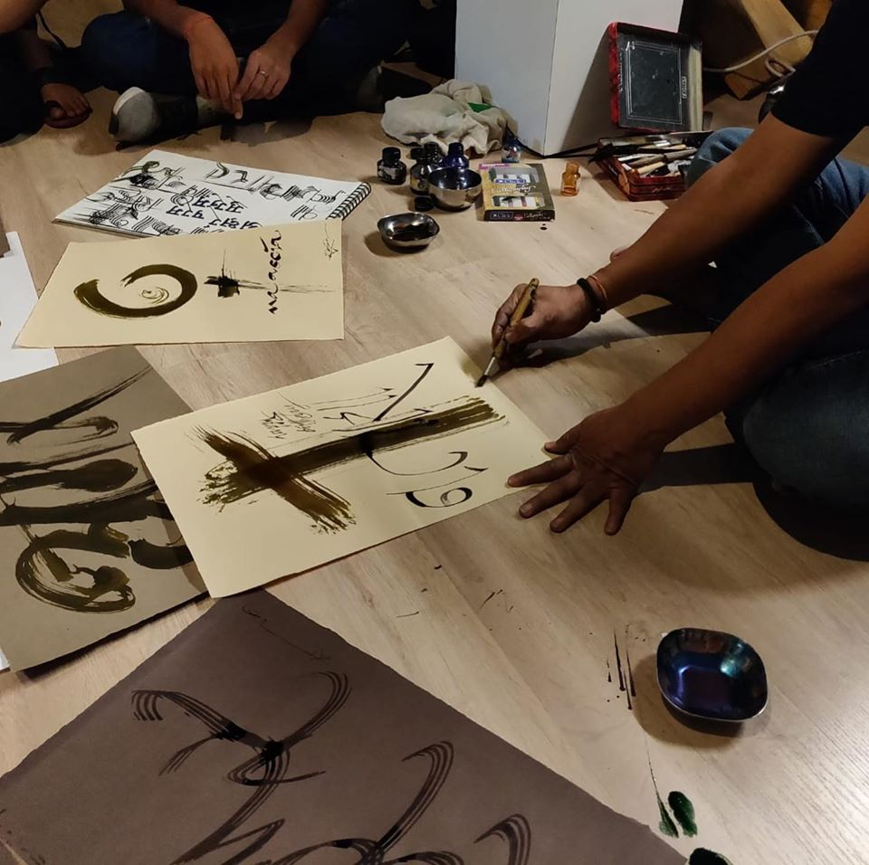

UPCOMING in NEW YORK CITY again July 28 - 30, 2023
Fontwala is a story inspired by the life and work of Rajeev Prakash Khare a typographer, font designer and calligrapher of Indian scripts. He designed one of the first keyboards The Anglo Nagari Keyboard that allowed for Indian scripts to be typed on a Latin based keyboard. Shubhra Prakash, his niece and New York based theatre artist began interviewing him in 2017 to write this story of innovation. The story has become a solo theatre play in English, an ensemble play in Hindi, a digital exhibiton and is on its way to become a documentary. All these forms pose three questions:

Rajeev Prakash Khare is a calligrapher and font design expert who founded VSOFT, one of the first software companies in the 90s to produce Indian language fonts. He started in his younger years by painting election ads on the walls of his neighborhood in Allahabad (now Prayag Raj) and through his education in Benaras Hindu University (BFA) to IIT Bombay IDC he never thought he would create a software for Hindi typing on the computer keyboard. Neither did he know then that typefaces designed by him would be used on a mass scale by publishing houses, media, film industry and government offices in India. Visit Website
Written and performed in English by Shubhra Prakash.
Posters Grid
Ensemble play
about
In December 2018, I moved to India to research my next play, Fontwala. Early 2017 I began interviewing Rajeev Prakash Khare, a designer and typographer of Indian letterforms, mainly Devanagari. He designed the ANGLO NAGARI KEYBOARD one of the first softwares that could type Hindi and other Indian languages on the Computer via their program APS. As Microsoft entered the market with Windows XP loaded with free fonts for Indian languages, Khare's company shut down overnight. The story is a man's passion for his language and script and digitization of "complex" scripts. During the research I proposed a digital art exhibition at New Delhi's Kaleidoscope Digital Art. I shot, edited, animated and produced the exhibition that ran for three weeks in Aug 2019. We presented our work in seven video screens as well as weekly Devanagari calligraphy workshops for the attendees. After the exhibition we also participated with Delhi Street Art to create street art based on Devanagari script.
click image to watch videos, use password 'typehindi'.
Note : Rajeev Prakash Khare voiceovers are currently in Hindi language only. English dubbing and captioning yet to be added for the next iteration.

Videos exhibited covered topics such as : aesthetic of complex script, battle of conjuncts and
maatras, our everyday interaction with type, the long road to typing in hindi on an english keyboard
and the legacies of pioneers who carried devnagari
from stone -> metal -> printing press -> digital age.


 

Gallery attendees participated in a Devanagari calligraphy workshop led by Rajeev Prakash Khare.
Special coverage of exhibition by National Channel: Doordarshan (at 6:22)
Organized a youth calligraphy workshop with Fontwala Rajeev Prakash and the members of Delhi Street Art (DSA). Read about DSA here the city is their canvas.


Photos courtsey of Delhi Street Art.
visit website for fontwala. Read blog
facebook page : @rajeevfontwala
instagram : @fontwalaExperience
twitter : @indiafontwala